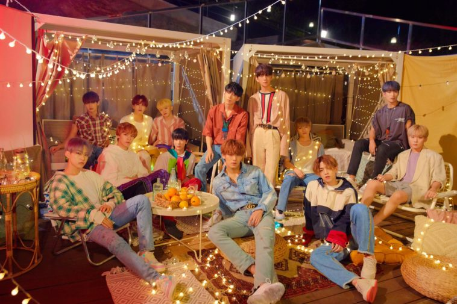

HIPHOP Unit
- S.Coups (Hangul: 에스쿱스) lahir sebagai
Choi Seungcheol (Hangul: 최승철) pada 8 Agustus 1995
(umur 27) di Daegu, Korea Selatan. Ia adalah leader
utama grup sekaligus leader untuk unit Hip-Hop. Ia
awalnya ditujukan untuk debut bersama NU'EST.
- Wonwoo (Hangul: 원우) lahir sebagai Jeon Wonwoo
(Hangul: 전원우) pada 17 Juli 1996 (umur 26) di
Changwon, Gyeongsangnam-do, Korea Selatan.
- Mingyu (Hangul: 민규) lahir sebagai Kim Mingyu
(Hangul: 김민규) pada 6 April 1997 (umur 25) di
Anyang, Korea Selatan.
- Vernon (Hangul: 버논) lahir sebagai Chwe Hansol
Vernon dengan nama korea Choi Hansol (Hangul: 최한솔)
pada 18 Februari 1998 (umur 24) di New York, Amerika
Serikat.
Vocal Unit
- Woozi (Hangul: 우지) lahir sebagai Lee Jihoon
(Hangul: 이지훈) pada 22 November 1996 (umur 26)
di Busan, Korea Selatan. Ia adalah leader untuk
unit vokal.
- Jeonghan (Hangul: 정한) lahir sebagai Yoon Jeonghan
(Hangul: 윤정한) pada 4 Oktober 1995 (umur 27) di
Hwaseong, Korea Selatan.
- Joshua (Hangul: 조슈아) lahir sebagai Joshua Hong
(Hangul: 조슈아 홍) dengan nama korea Hong Jisoo
(Hangul: 홍지수) pada 30 Desember 1995 (umur 26).
Ia berasal dari Los Angeles, California, Amerika
Serikat.
- DK atau dikenal juga sebagai Dokyeom (Hangul: 도겸)
dengan nama asli Lee Seokmin (Hangul: 이석민)
pada 18 Februari 1997 (umur 25) di Yongin, Gyeonggi,
Korea Selatan.
- Seungkwan (Hangul: 승관) lahir sebagai Boo Seungkwan
(Hangul: 부승관) pada 16 Januari 1998 (umur 24) di
Busan, Korea Selatan tetapi tinggal di jeju sejak
kecil.
Performance Unit
- Hoshi (Hangul: 호시)lahir sebagai Kwon Soonyoung
(Hangul: 권순영) pada 15 Juni 1996 (umur 26) di
Namyangju, Gyeonggi, Korea Selatan. Ia adalah leader
untuk Performance Unit.
- Jun (Hangul: 준) lahir sebagai Wen Junhui (Hanzi: 文俊辉)
atau dalam bahasa Korea (Hangul: 문준휘) pada 10 Juni 1996
(umur 26) di Shenzhen, Guangdong, Tiongkok. Ia adalah
seorang aktor di Tiongkok dan tampil di beberapa acara TV
dan film.
- The8 (Hangul: 디에잇) lahir sebagai Xu Minghao (Hanzi: 徐明浩)
atau dalam bahasa Korea Seo Myung Ho (Hangul: 서뮹호)
pada 7 November 1997 (umur 25) di Anshan, Liaoning, Tiongkok.
- Dino (Hangul: 디노) lahir sebagai Lee Chan (Hangul: 이찬)
pada 11 Februari 1999 (umur 23) di Iksan, Jeollabuk-do,
Korea Selatan.